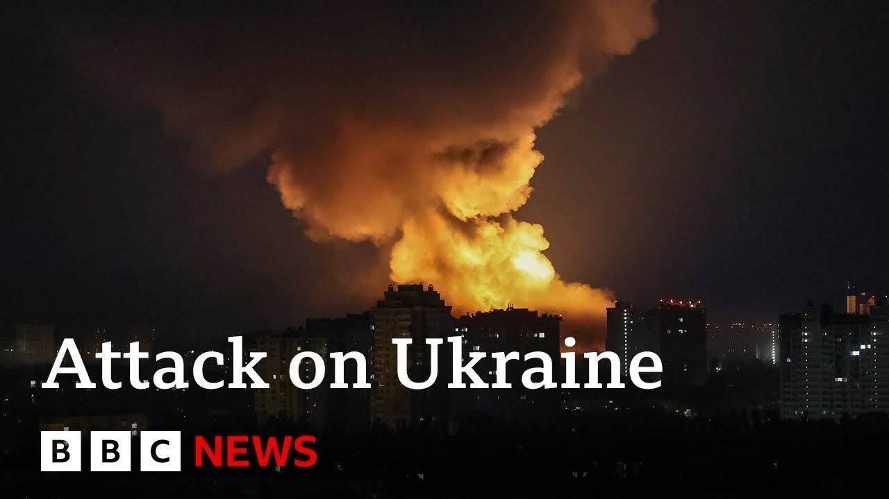

【BBC News 20250705 基辅遭无人机大规模袭击，普京拒绝特朗普的停火提议】
Summary: Ukraine's capital Kyiv endured one of its worst nights of war with Russia, as hundreds of drones and missiles struck the city, causing widespread damage. President Zelensky called the attacks deliberately massive and cynical.
摘要： 乌克兰首都基辅经历了与俄罗斯开战以来最严重的袭击之一，数百架无人机和导弹袭击该市，造成大面积破坏。泽连斯基总统称此次袭击蓄意且规模巨大，充满恶意。

⏱️ Estimated Reading Time: 11 min
📚 四级生词 📚 六级生词 📚 雅思生词 📚 托福生词 📚 专八生词 📚 SAT生词 📚 考研生词 📚 GRE生词 📚 高考生词 📚 其它生词生词
We begin in Ukraine where the capital Kyiv has experienced one of its worst nights of the war with Russia so far.
我们从乌克兰开始报道，首都基辅经历了与俄罗斯开战以来最严重的夜晚之一。
Hundreds of drones and ballistic missiles rain down on the city with damage reported right across the capital.
数百架无人机和弹道导弹如雨点般落在城市，首都各地均报告受损。
President Zelensky called the attacks deliberately massive and cynical.
泽连斯基总统称此次袭击蓄意且规模巨大，充满恶意。
The footage captures the moment a drone exploded in Kyiv's residential area.
画面捕捉到一架无人机在基辅居民区爆炸的瞬间。
Ukraine's air force says a record 550 drones and 11 missiles were fired.
乌克兰空军表示，俄方发射了创纪录的550架无人机和11枚导弹。
Dozens of them broke through Ukraine's air defenses.
其中数十架突破了乌克兰的防空系统。
Authorities say almost every district of the city was damaged.
当局表示，该市几乎每个区都遭到破坏。
At least 14 people reported to have been injured.
据报道，至少有14人受伤。
The attacks happened just hours after President Trump spoke to Russia's President Putin on the phone.
袭击发生前几小时，特朗普总统刚与俄罗斯总统普京通电话。
Mr. Trump told reporters he didn't make any progress towards a ceasefire.
特朗普告诉记者，他在停火方面没有取得任何进展。
We had a call. It was a pretty long call.
我们通了电话。那是一通相当长的电话。
We talked about a lot of things including Iran and we also talked about the war with Ukraine.
我们讨论了许多事情，包括伊朗，还谈到了与乌克兰的战争。
I'm not happy about that. I'm not happy any on a deal with Ukraine.
我对此不满意。我对与乌克兰的任何协议都不满意。
No, I didn't make any progress with him today at all.
不，我今天与他完全没有取得任何进展。
Well, let's go straight to Kyiv now and our diplomatic correspondent Paul Adams.
现在让我们直接连线基辅的外交记者保罗·亚当斯。
Paul, welcome to you. Describe the scenes there overnight.
保罗，欢迎你。描述一下昨晚的情况。
There was a long old night. It started before darkness and continued really until just around dawn.
那是一个漫长的夜晚。天黑前开始，一直持续到黎明时分。
And it was pretty relentless. Waves of drones, we could hear them coming over the city hour after hour.
袭击非常猛烈。一波又一波的无人机，我们能听到它们连续数小时飞越城市上空。
The air defenses were very very active and it is a testament to their effectiveness that no one was killed as a result of these attacks.
防空系统非常活跃，袭击未造成人员死亡证明了它们的有效性。
And then we also had a number of large explosions.
此外还发生了多次大爆炸。
And when we came up here this morning, the city was covered in a thick black pall of smoke.
今早我们来到这里时，城市被厚厚的黑烟笼罩。
And there was a heavy acrid smell in the air which is only really now dissipating.
空气中弥漫着刺鼻的气味，现在才逐渐消散。
We're not quite sure what that was coming from, but we know that there were fires in a number of locations.
我们不确定气味来源，但知道多个地点发生了火灾。
So this was yet another reminder for the citizens of this city that Russia's tactics have not changed at all.
这再次提醒该市市民，俄罗斯的战术丝毫没有改变。
And Paul, President Zelensky called the attacks deliberately massive and cynical and they came just hours after President Trump's call with President Putin which we heard him say that he didn't make any progress at all.
保罗，泽连斯基总统称袭击蓄意且规模巨大，充满恶意，而袭击发生在特朗普总统与普京通话几小时后，特朗普称通话毫无进展。
I thought Donald Trump sounded especially bleak about that phone call yesterday.
我认为特朗普对昨天的通话显得特别悲观。
It's hard to gauge Donald Trump's mood and more importantly his intentions moving forward, but he did sound as though he'd had enough of his dialogue with Vladimir Putin.
很难判断特朗普的情绪，更重要的是他未来的意图，但他听起来似乎已厌倦了与普京的对话。
Of course, there's going to be a conversation possibly as early as today with Volodymyr Zelensky and President Zelensky's message will be a number of things.
当然，最早可能今天就会与泽连斯基通话，泽连斯基总统将传达几件事。
One, can you tell me more about this pause in the supply of American military equipment to Ukraine because the details of that are still very unclear.
一是关于美国暂停向乌克兰提供军事装备的更多细节，因为目前仍不清楚具体情况。
And also that it is up to you, the United States, to do more to change Russia's behavior.
二是美国必须采取更多行动改变俄罗斯的行为。
At the end of his statement this morning, President Zelensky said that there have to be more sanctions.
泽连斯基总统今早声明最后表示，必须实施更多制裁。
This is the only way to bring about real rapid change.
这是实现真正快速改变的唯一途径。
And this depends, he said, on our partners above all the United States.
他表示，这取决于我们的伙伴，尤其是美国。
President Zelensky will have seen the reports that far from drawing up new sanctions proposals, the Trump administration actually seems to be letting some of the sanctions slide with the effect that there's actually less pressure on Russia being brought to bear by the Americans than there was before.
泽连斯基总统已看到报道，特朗普政府非但没有制定新制裁提案，反而似乎在放松部分制裁，导致美国对俄罗斯施加的压力比之前更小。
Okay, Paul Adams in Kyiv. Thank you.
好的，基辅的保罗·亚当斯。谢谢。
We can get more on this with Chris York now, news operations editor at the Kyiv Independent who joins us from the capital.
现在我们可以连线基辅独立新闻运营编辑克里斯·约克，了解更多情况。
Welcome to you. Good to have you with us. Tell us about your experiences during the night there.
欢迎你。很高兴你能加入我们。谈谈你昨晚的经历。
Well, it wasn't very pleasant at all.
嗯，一点也不愉快。
I think the air raid siren started quite early yesterday evening and then you could hear the air defenses working in the distance.
我认为空袭警报昨晚很早就响起，然后你能听到远处的防空系统运作声。
And then as Russia sent more and more of these kamikaze drones, they started getting through.
随着俄罗斯派出更多自杀式无人机，它们开始突破防线。
So, I was just sat in my hallway for hours just listening to these drones flying over.
所以，我在走廊里坐了几个小时，听着无人机飞过。
And I think it's worth reminding viewers that these aren't small FPV hobby drones.
我认为有必要提醒观众，这些不是小型FPV业余无人机。
They are 3 m long, 2 and a half m wide, carry 70 kilos of explosives.
它们长3米，宽2.5米，携带70公斤炸药。
And hearing them flying over your flat, and then exploding, being blown out of the sky is not a very nice experience at all.
听到它们飞过你的公寓，然后爆炸或被击落，绝不是愉快的经历。
Yeah, Chris, as we're talking to you, we're looking at pictures of some of those explosions overnight.
是的，克里斯，我们与你交谈时，正看着昨晚一些爆炸的画面。
Have you managed to go outside yet to see the extent of the damage?
你出去看过破坏程度了吗？
I mean I've come to the office to work. I didn't go haven't been to the sites of the attacks.
我来办公室工作，还没去过袭击现场。
We've got reporters there now.
我们有记者在那里。
But the one thing that was totally noticeable to everybody this morning was just the smell of burning in the air.
但今早所有人都明显注意到的是空气中的烧焦味。
It's definitely in terms of the amount of fire and damage like one of the worst attacks on Kyiv of the full scale war so far.
就火灾和破坏程度而言，这绝对是全面战争以来对基辅最严重的袭击之一。
Yeah. President Zelensky is due to hold a talk, isn't he, with President Trump in the coming hours.
是的。泽连斯基总统预计几小时后与特朗普总统通话。
He described these talks as deliberately cynical.
他称此次袭击蓄意且充满恶意。
What is the feeling there, the mood in Kyiv about any hopes of progress over a ceasefire and peace talks?
基辅对停火和和平谈判取得进展的希望有何看法？
There's little hope. I think very a lot of skepticism.
希望渺茫。我认为很多人持怀疑态度。
Russia with these mass missile and drone attacks, they're usually very predictable and they almost always do them on a weekend, a Saturday or a Sunday early hours.
俄罗斯的大规模导弹和无人机袭击通常很有规律，几乎总是在周末，周六或周日凌晨进行。
So, the fact that they did it on a Thursday and the air raid sirens might have gone on off after Trump and Putin had hung up the phones, but they must have been launched likely during the phone call or before it.
所以，他们在周四发动袭击，空袭警报可能在特朗普和普京挂断电话后响起，但它们很可能在通话期间或之前就已发射。
It was a very very deliberate message from Russia that they have no respect for any peace process and they are not going to stop until they've achieved what they've been trying to set out since February 2022.
这是俄罗斯发出的非常刻意的信号，表明他们不尊重任何和平进程，不达目的不会停止，这个目的自2022年2月以来一直未变。
Yeah. And when you bear that in mind and the extent of the death toll there in Ukraine, what's the sense of how this evolves going forward now, especially with this pause in the delivery of munitions from the US?
是的。考虑到这一点以及乌克兰的死亡人数，你认为局势将如何发展，尤其是美国暂停提供弹药？
It's pretty bleak.
相当黯淡。
I remember in December we were talking about a surge in these drone attacks and at that time we were seeing 2,000 around 2,000 of them a month being launched.
我记得12月我们讨论过无人机袭击激增，当时每月约2000架。
We were asking then how bad can this get?
我们当时问情况会多糟。
June was a record and it was over 5,000 of them.
6月创下纪录，超过5000架。
And Russia is only producing more and more of these drones and more missiles.
俄罗斯只生产越来越多的无人机和导弹。
and Ukraine, it appears, is getting fewer and fewer air defenses to combat them with.
而乌克兰似乎获得越来越少的防空系统来应对。
So, yeah, it's a really bleak picture at the moment here.
所以，是的，目前情况非常黯淡。
Everyone is especially tired today, but just in general as well, there is a just a real kind of sense of like how bad things can get here.
今天每个人都特别疲惫，但总的来说，人们真的感觉到情况会变得多糟。
Okay, Chris York, thank you very much for joining us from Kyiv.
好的，克里斯·约克，非常感谢你从基辅连线。